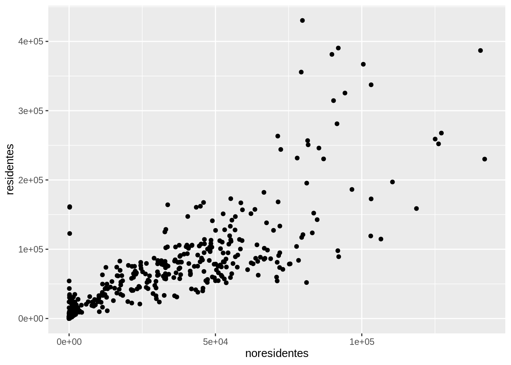
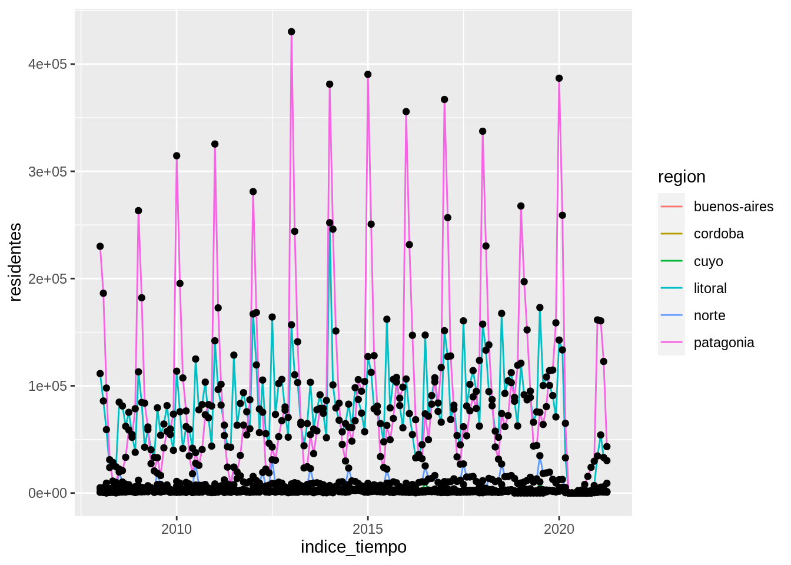
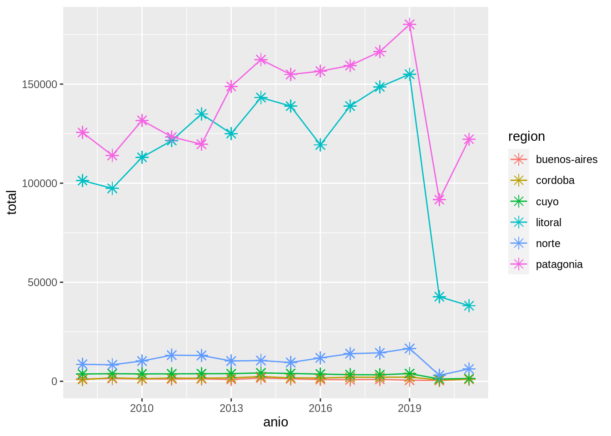
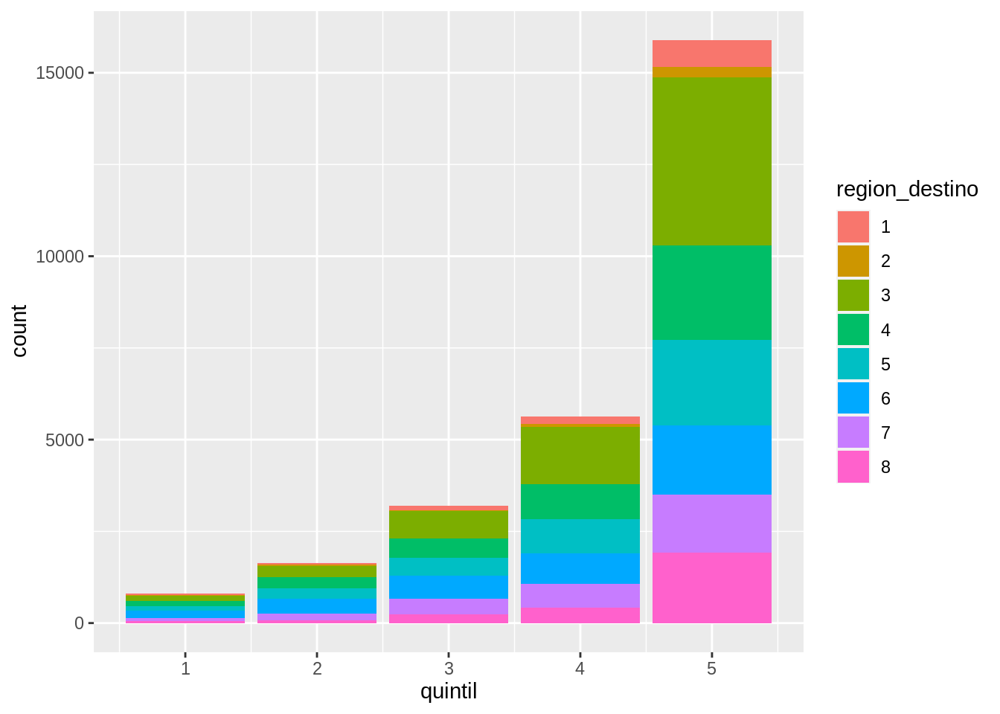

Capítulo 6 Gráficos con ggplot2
Visualizar datos es útil para identificar a relación entre distintas variables pero también para comunicar el análisis de los datos y resultados.
El paquete ggplot2 permite generar gráficos de gran calidad en pocos pasos.
Cualquier gráfico de ggplot tendrá como mínimo 3 componentes: los datos, un sistema de coordenadas y una geometría (la representación visual de los datos) y se irá construyendo por capas.
6.1 Primera capa: el área del gráfico
Cómo siempre será necesario cargar los paquetes que vamos a usar y ya que estamos los datos con los que venimos trabajando:
library(readr)
library(ggplot2)
library(dplyr)
turistas_destinos_url <- "http://datos.yvera.gob.ar/dataset/945e10f1-eee7-48a2-b0ef-8aff11df8814/resource/b8f0f46d-eb2f-4d68-a182-e66778bbf89a/download/tur_int_turistas_residentes_destino_serie.csv"
turistas_destinos <- readr::read_csv(turistas_destinos_url)
turistas_destinos <- turistas_destinos %>%
mutate(indice_tiempo = lubridate::ym(indice_tiempo))
paises <- read_csv("datos/paises.csv")La función principal de ggplot2 es justamente ggplot() que nos permite iniciar el gráfico y además definir las características globales.
El primer argumento de esta función serán los datos que queremos visualizar, siempre en un data.frame.
En este caso usamos paises.
El segundo argumento se llama mapping justamente porque mapea o dibuja los ejes del gráfico y siempre va acompañado de la función aes().
La función aes() recibe las propiedades estéticas del gráfico (o aesthetic en inglés) a partir de las variables (o columnas) del data frame estamos usando.
En este caso le indicamos que en el eje x querremos graficar la variable pib_per_capita y en eje y la variable esperanza_de_vida.
Pero esta sola función no es suficiente, solo genera la primera capa: el área del gráfico.

6.2 Segunda capa: geometrías
Necesitamos agregar una nueva capa a nuestro gráfico, los elementos geométricos o geoms que representaran los datos.
Para esto sumamos una función geom, por ejemplo si queremos representar los datos con puntos usaremos geom_point()

¡Nuestro primer gráfico!
Primer desafío
Ahora es tu turno. Modifica el gráfico anterior para visualizar cómo cambia la esperanza de vida a lo largo de los años.
¿Te parece útil este gráfico?
Este gráfico tiene muchísima información porque tiene un punto por cada país para cada año para visualizar la esperanza de vida. Pero por ahora no podemos identificar esos países, necesitamos agregar información al gráfico.
6.3 Mapear variables a elementos
Una posible solución sería utilizar otras variables de nuestros datos, por ejemplo continente y mapear el color de los puntos de a cuerdo al continente que pertenecen.
ggplot(data = turistas_destinos, mapping = aes(x = indice_tiempo, y = turistas)) +
geom_point(aes(color = region_destino))Ahh, ahora está un poco mejor. Por ejemplo ya podemos ver que muchos países de Europa (los puntos celestes) tienen en promedio mayor esperanza de vida a lo largo de los años que muchos países de África (los puntos rojos). Aún no podemos identificar los países individualmente pero podemos sacar algo más de información de nuestros datos.
Algo muy importante a tener en cuenta: los puntos toman un color de acuerdo a una variable de los datos, y para que ggplot2 identifique esa variable (en este caso continente) es necesario incluirla dentro de una función aes().
6.4 Otras geometrías
Este gráfico posiblemente no sea muy adecuado si queremos visualizar la evolución de una variable a lo largo del tiempo, necesitamos cambiar la geometría a lineas usando geom_line()
ggplot(data = turistas_destinos, mapping = aes(x = indice_tiempo, y = turistas)) +
geom_line(aes(color = region_destino))
Por suerte las funciones geom_*() tienen más o menos nombres amigables.
Pero el gráfico sigue teniendo problemas, al parecer dibujó una línea por continente.
Si estuviéramos dibujando este gráfico con lápiz y papel muy posiblemente hubiéramos identificado los puntos que corresponden a cada país y los hubiéramos “unido con líneas”, necesitamos que ggplot2 haga esto.
¿Cómo le indicamos que puntos corresponde a cada país?
Necesitamos que los agrupe por la variable pais (¡qué bueno que tenemos toda esa información en nuestra base de datos!).
ggplot(data = paises, mapping = aes(x = anio, y = esperanza_de_vida)) +
geom_line(aes(color = continente, group = pais))Usamos el argumento group = y de nuevo, lo incluimos dentro de la función aes() para indicarle a ggplot2 que busque la variable pais dentro del data.frame que estamos usando.
Y ahora si, conseguimos el gráfico que estamos buscando.
Segundo desafío
Cuando mencionamos que ggplot2 construye gráficos por capas, lo decíamos en serio! Hasta ahora tenemos dos capas: el área del gráfico y una geometría (las líneas).
- Sumá una tercera capa para visualizar puntos además de las líneas.
- ¿Porqué los puntos ahora no siguen los colores de los continentes?
- ¿Qué cambio podrías hacer para que los puntos también tengan color según el continente?
Acá surge una característica importante de las capas: pueden tener apariencia independiente si solo mapeamos el color en la capa de las líneas y no en la capa de los puntos.
Al mismo tiempo, si quisiéramos que todas las capas tenga la misma apariencia podemos incluir el argumento color =en la función global ggpplot() o repetirlo en cada capa.
# ggplot(paises, aes(anio, esperanza_de_vida)) +
# geom_line(aes(color = continente, group = pais)) +
# geom_point()Si te preguntabas a donde fueron a parar el data =, el mapping = y los nombres de los argumentos adentro de la función aes(), x = e y =, resulta que estamos aprovechando que tanto ggplot2 como nosotros ahora sabemos en que orden recibe la información cada función.
Siempre el primer elemento que le pasemos o indiquemos a la función ggplot() será el data.frame.
Algunos argumentos para cambiar la apariencia de las geometrías son:
colorocolourmodifica el color de líneas y puntosfillmodifica el color del área de un elemento, por ejemplo el relleno de un puntolinetypemodifica el tipo de línea (punteada, continua, con guiones, etc.)pchmodifica el tamaño del puntosizemodifica el tamaño de los elementos (por ejemplo el tamaño de puntos o el grosor de líneas)alphamodifica la transparencia de los elementos (1 = opaco, 0 = transparente)shapemodifica el tipo de punto (círculos, cuadrados, triángulos, etc.)
El mapeo entre una variable y un parámetro de geometría se hace a través de una escala.
La escala de colores es lo que define, por ejemplo, que los puntos donde la variable continente toma el valor "África" van a tener el color rosa (●), donde toma el valor "Américas", mostaza (●), etc…
Modificar elementos utilizando un valor único
Es posible que en algún momento necesites cambiar la apariencia de los elementos o geometrías independientemente de las variables de tu data.frame.
Por ejemplo podrías querer que todos los puntos sean de un único color: rojos.
En este caso geom_point(aes(color = "red")) no va a funcionar -ojo que los colores van en inglés-.
Lo que ese código dice es que mapee el parámetro geométrico “color” a una variable que contiene el valor "red" para todas las filas.
El mapeo se hace a través de la escala, que va a asignarle un valor (rosa ●) a los puntos correspondientes al valor "red".
Ahora que no nos interesa mapear el color a una variable, podemos mover ese argumento afuera de la función aes(): geom_point(color = "red").
6.5 Relación entre variables
Muchas veces no es suficiente con mirar los datos crudos para identificar la relación entre las variables; es necesario usar alguna transformación estadística que resalte esas relaciones, ya sea ajustando una recta o calculando promedios.
Para alguna transformaciones estadísticas comunes, {ggplot2} tiene geoms ya programados, pero muchas veces es posible que necesitemos manipular los datos antes de poder hacer un gráfico. A veces esa manipulación será compleja y entonces para no repetir el cálculo muchas veces, guardaremos los datos modificados en una nueva variable. Pero también podemos encadenar la manipulación de los datos y el gráfico resultante.
Por ejemplo, calculemos la esperanza de vida media por continente y para cada año usando dplyr y luego grafiquemos la esperanza_de_vida_media a los largo de los anios:
library(dplyr)
paises %>%
group_by(continente, anio) %>%
summarise(esperanza_de_vida_media = mean(esperanza_de_vida)) %>%
ggplot(aes(anio, esperanza_de_vida_media)) + # Acá se acaban los %>% y comienzan los "+"
geom_point()## `summarise()` has grouped output by 'continente'. You can override using the `.groups` argument.
Esto es posible gracias al operador %>% que le pasa el resultado de summarise() a la función ggplot().
Y este resultado no es ni más ni menos que el data.frame que necesitamos para hacer nuestro gráfico.
Es importante notar que una vez que comenzamos el gráfico ya no se puede usar el operador %>% y las capas del gráfico se suman como siempre con +.
Este gráfico entonces parece mostrar que la esperanza de vida fue aumentado a lo largo de los años pero sería interesante ver esa relación más explícitamente agregando una nueva capa con geom_smooth().
paises %>%
group_by(continente, anio) %>%
summarise(esperanza_de_vida_media = mean(esperanza_de_vida)) %>%
ggplot(aes(anio, esperanza_de_vida_media)) +
geom_point() +
geom_smooth()## `summarise()` has grouped output by 'continente'. You can override using the `.groups` argument.## `geom_smooth()` using method = 'loess' and formula 'y ~ x'
Como dice en el mensaje, por defecto geom_smooth() suaviza los datos usando el método loess (regresión lineal local) cuando hay menos de 1000 datos.
Seguramente va a ser muy común que quieras ajustar una regresión lineal global.
En ese caso, hay que poner method = "lm":
paises %>%
group_by(continente, anio) %>%
summarise(esperanza_de_vida_media = mean(esperanza_de_vida)) %>%
ggplot(aes(anio, esperanza_de_vida_media)) +
geom_point() +
geom_smooth(method = "lm")## `summarise()` has grouped output by 'continente'. You can override using the `.groups` argument.## `geom_smooth()` using formula 'y ~ x'En gris nos muestra el intervalo de confianza al rededor de este suavizado que en este caso es bastante grande porque tenemos pocos datos!
Cómo cualquier geom, podemos modificar el color, el grosor de la línea y casi cualquier cosa que se te ocurra.
Tercer desafío
Modificá el siguiente código para obtener el gráfico que se muestra más abajo.
paises %>%
group_by(continente, _____) %>%
summarise(esperanza_de_vida_media = mean(esperanza_de_vida)) %>%
ggplot(aes(anio, ________________)) +
geom_point(aes(color = continente), size = 3, shape = _____) +
geom_smooth(color = continente) ## `summarise()` has grouped output by 'continente'. You can override using the `.groups` argument.## `geom_smooth()` using method = 'loess' and formula 'y ~ x'6.6 Transformaciones estadísticas
Hasta ahora visualizamos los datos tal cual vienen en la base de datos o con ayuda de {dplyr} para transformarlos.
Pero como adelantamos con geom_smooth(), hay ciertas transformaciones comunes que se pueden hacer usando ggplot2.
De paso vamos a usar datos incluidos en el paquete datos (muchos paquetes traen bases de datos para probar cosas, ¡este en particular son todas bases de datos en español!) que podés descargar como siempre con install.packages("datos").
Los datos diamantes contiene información sobre ~ 54.000 diamantes, incluido el precio, el quilate, el color, la claridad y el corte de cada uno.
## tibble [53,940 × 10] (S3: tbl_df/tbl/data.frame)
## $ precio : int [1:53940] 326 326 327 334 335 336 336 337 337 338 ...
## $ quilate : num [1:53940] 0.23 0.21 0.23 0.29 0.31 0.24 0.24 0.26 0.22 0.23 ...
## $ corte : Ord.factor w/ 5 levels "Regular"<"Bueno"<..: 5 4 2 4 2 3 3 3 1 3 ...
## $ color : Ord.factor w/ 7 levels "D"<"E"<"F"<"G"<..: 2 2 2 6 7 7 6 5 2 5 ...
## $ claridad : Ord.factor w/ 8 levels "I1"<"SI2"<"SI1"<..: 2 3 5 4 2 6 7 3 4 5 ...
## $ profundidad: num [1:53940] 61.5 59.8 56.9 62.4 63.3 62.8 62.3 61.9 65.1 59.4 ...
## $ tabla : num [1:53940] 55 61 65 58 58 57 57 55 61 61 ...
## $ x : num [1:53940] 3.95 3.89 4.05 4.2 4.34 3.94 3.95 4.07 3.87 4 ...
## $ y : num [1:53940] 3.98 3.84 4.07 4.23 4.35 3.96 3.98 4.11 3.78 4.05 ...
## $ z : num [1:53940] 2.43 2.31 2.31 2.63 2.75 2.48 2.47 2.53 2.49 2.39 ...6.7 Gráficos de frecuencias
Este es un gráfico de barras construido usando la función geom_bar().
En el eje x muestra el corte de los diamantes y en el eje y la cantidad (count en inglés) de diamantes en cada categoría.
Pero diamantes no tiene una variable que se llame count y tampoco la generamos nosotros.
¡Es calculada internamente por {ggplot2}!

Cómo el gráfico de barras, también podemos graficar histogramas con geom_histogram() y polígonos de frecuencia con geom_density() para visualizar la cantidad de observaciones que caen en cada categoría (si la variable es discreta como el caso del corte de los diamantes) o rango de valores (para variables continuas).
Un ejemplo de variable continua es el precio de los diamantes, veamos como se ve un histograma y de paso le cambiamos el color a las barras, pero ojo, solo al borde.
## `stat_bin()` using `bins = 30`. Pick better value with `binwidth`.
Primer desafío
¿Notaste el mensaje que devuelve el gráfico?
`stat_bin() using bins = 30.
Pick better value with binwidth.`
Esta geometría tiene dos argumentos importantes bins y binwidth.
Cambiá el valor de alguno de los dos argumentos y volvé a generar el gráfico, ¿que rol juegan los argumentos?
También podés revisar la documentación.
Además de contar la cantidad de elementos, {ggplot2} puede calcular muchas otras transformaciones sobre los datos.
Por ejemplo si quisiéramos el porcentaje o la proporción que le corresponde a cada categoría de corte respecto del total podemos hacerlo mapeando esa transformación prop al eje y con la función stat().
Fijate que la variable prop no es una columna de diamantes sino que es el nombre de una variable computada por geom_bar(), por eso hay que rodearla de la función stat().
El nombre de las variables computadas por cada geoms está en su documentación (abajo de todo, antes de los ejemplos).
Ahora podríamos decir que el 40% de los diamantes en la base de datos tienen un corte ideal.
Además de la función stat() agregamos group = 1 y esto no fue sin querer.
Probá correr el gráfico sin ese argumento.
Al incluir group = 1, {ggplot2} junta todas las observaciones en un único grupo (con el valor 1) y calcula la proporción o el porcentaje que representa cada corte respecto del total de diamantes.
Si no incluimos eso, {ggplot2} asumirá que cada categoría de corte es un grupo independiente y el cálculo del porcentaje también lo hará por separado.
6.7.1 Posición
Ya vimos que la estética del color sólo modifica el borde de las barras, si quisieras modificar el relleno necesitamos cambiar el fill y al igual que antes podemos mapear una variable a esta estética.
Al mapear una variable distinta, la claridad de los diamantes, podemos visualizar información extra.
Este “apilamiento” de las barras es la opción de posición por defecto position = "stack", pero podrías usar una de las otras tres opciones: "identity", "dodge" o "fill".
position = "identity"colocará cada barra comenzando en cero quedando todas superpuestas. Para ver esa superposición, debemos hacer que las barras sean ligeramente transparentes configurando elalphaa un valor pequeño.

position = "fill"apila las barras al igual queposition = "stack", pero transforma los datos para que cada conjunto de barras apiladas tenga la misma altura. Esto hace que sea más fácil comparar proporciones entre grupos.

position = "dodge"coloca las barras una al lado de la otra. Esto hace que sea más fácil comparar valores individuales.
6.8 Gráficos de líneas suavizas
Cómo vimos antes, los gráficos de líneas suavizadas (smoothers) ajustan un modelo a los datos y luego grafican las predicciones del modelo. Sin entrar en muchos detalles, se puede aplicar distintos modelos y la elección del mismo dependerá de los datos.
## `geom_smooth()` using method = 'gam' and formula 'y ~ s(x, bs = "cs")'6.9 Gráficos de caja
Los diagramas de caja, mejor conocidos como boxplots calculan un resumen robusto de la distribución y luego muestran una caja con formato especial.
La línea central de la caja corresponde a la mediana (el valor que toma el dato central) y los extremos de la caja son los cuartiles 1 y 3, definiendo así el rango intercuartil (IQR). Los extremos están definidos como el valor observado que no esté más lejos de 1.5*IQR de la mediana y los puntos son los las observaciones que se escapan de ese rango, que pueden ser considerados outliers o valores extremos.

Los boxplot dan muchísima información sobre los datos pero al mismo tiempo esconden la cantidad de observaciones que se usaron para generarlos y en particular cual es la frecuencia a lo largo del eje y.
Por esta razón también existen geom_violin() y geom_jitter().
Segundo desafío
- Volvé a graficar la distribución del precio para cada tipo de claridad pero ahora usando
geom_violin()ygeom_jitter(). - ¿Qué ventajas y desventajas encuentran respecto de
geom_boxplot()?

Cuando nuestra base de datos es muy grande corremos el riesgo de generar de que los elementos del gráfico estén tan juntos que se solapen y no se vean.
Esto se conoce como overplotting.
La base de datos diamantes tiene 53940 observaciones y al graficar un punto por cada una, aún si están separados por la claridad, quedan superpuestos.
Para resolver este problema se suele modificar la estética de los elementos, cambiando el tamaño o size para que ocupen menos lugar y se vean mejor, cambiando la forma o shape por alguna que no tenga relleno y permita ver los elementos que hay atrás o modificando la transparencia o alpha por la misma razón.
En bases de datos tan grandes como la de diamantes, muchas veces hay que utilizar varios de estos recursos.
6.10 Graficando en múltiples paneles
Vimos que es posible graficar más de dos variables en un gráfico mapeando una variable al color o por ejemplo el tipo de línea o linetype
En este caso no solo visualizamos la relación entre el precio y el quilate del diamante, también podemos ver que rol juega el color. También podríamos haber intentando resolver el problema generando un gráfico por cada color filtrando las observaciones correspondientes.
diamantes %>%
filter(color == "D") %>%
ggplot(aes(quilate, precio)) +
geom_point(aes(color = color))
Pero sería muchísimo trabajo si tenemos que hacer esto para cada una de las 7 categorías de color. La buena noticia es que {ggplot2} tiene un par de funciones justo para resolver este problema:

Esta nueva capa con facet_wrap() divide al gráfico inicial en 7 paneles o facets, uno por cada color.
Esta función requiere saber que variable será la responsable de separar los paneles y para eso se usa la notación de fórmula de R: ~color.
Esto se lee como generar paneles “en función del color”.
¿Y si quisiéramos generar paneles a partir de 2 variables?
Para eso existe facet_grid().
En este gráfico generamos paneles viendo la “relación entre el corte y el color” y por ejemplo en el primer panel arriba a la izquierda podremos observar los diamantes que son al mismo tiempo de color D y corte Regular.
En este caso mapear la variable color al color de los diamantes no parece ser necesario ya que cada columna ya nos permite identificar eso, sin embargo en algunos casos ayuda a leer el gráfico más rápido.

Tercer desafío
Generá boxplots para analizar como se comporta el precio según la claridad para cada tipo de corte como se ve acá.